MongoDB
安装环境
- Operation system : redhat7
- Install packages path: /home/mongo
- mongodb server IP: 10.96.43.105
- username : root
- Password: abc.0813
- //change it if necessary
安装mongoDB
- 将安装文件上传到服务器的目录下面
- 登录要安装的mongodb服务器
- 进入到有安装包的目录（这里使用的是/home/mongo）
xxxxxxxxxxcd /home/mongo- 运行命令
xxxxxxxxxxrpm -ivh mongodb-enterprise-server-4.0.2-1.el7.x86_64.rpmrpm -ivh mongodb-enterprise-mongos-4.0.2-1.el7.x86_64.rpmrpm -ivh mongodb-enterprise-tools-4.0.2-1.el7.x86_64.rpmrpm -ivh mongodb-enterprise-shell-4.0.2-1.el7.x86_64.rpm- 如在安装过程中部分安装包的依赖关系无法满足，使用yum install 相应的包的名称，解决依赖关系
xxxxxxxxxxyum install the_package_name_what_you_want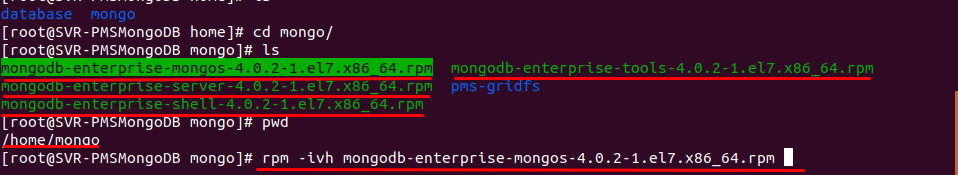
启动mongoDB服务
- 启动mongodb服务
xxxxxxxxxxsystemctl start mongod.service- 停止mongodb服务
xxxxxxxxxxsystemctl stop mongod.service- 将mongodb加入开机自动服务
xxxxxxxxxxsystemctl enable mongod.service - 将mongodb移除开机自启动服务
xxxxxxxxxxsystemctl disable mongod.service- 查看mongodb状态
xxxxxxxxxxsystemctl status mongod.service- 如果满足图中标识的部分，则表示运行正常 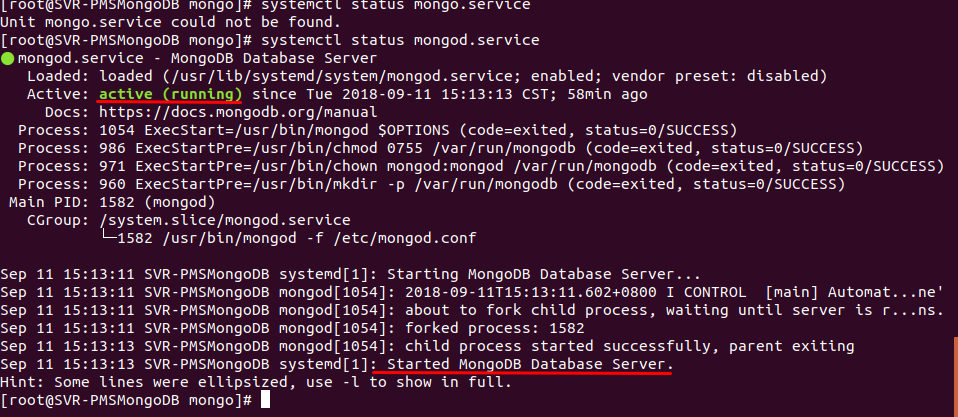
说明
- mongodb配置文件存放位置：/etc/mongo.conf
- mongodb log文件位置 ： /var/log/mongo/mongo.log
- mongodb 数据存放位置 :/home/database/mongo
Nginx
服务器环境
- system: redhat7
- Nginx server IP: 10.96.43.97
- username: root
- password: abc.0813
- //change it if necessary
编译安装nginx
- nginx 下载地址http://nginx.org/en/download.html
- 解压安装包
xxxxxxxxxxtar -xzvf nginx.tar.gz- 进入安装目录
xxxxxxxxxxcd nginx-1.15.2- 配置编译环境(--prefix 指定Nginx的安装路径)
xxxxxxxxxx./configure --prefix=/home/nginx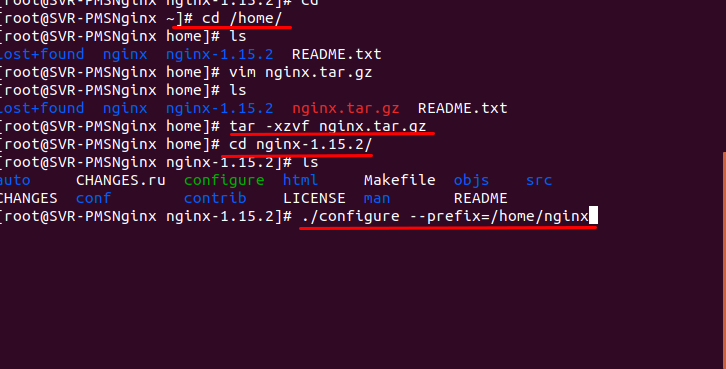
- 编译nginx
xxxxxxxxxxmake- 安装nginx
xxxxxxxxxxmake install注意
- nginx 在安装过程中可能需要root权限
- 安装完后,要在命令行运行nginx命令,要将/home/nginx/sbin 加入path路径
运行nginx
xxxxxxxxxxnginx -c /home/nginx/conf/nginx.conf停止nginx
xxxxxxxxxxpkill nginx说明
- 运行的时候请确保Nginx所使用的80端口开放
- 运行查看Nginx是否占用的正确的端口(使用root权限)
xxxxxxxxxxsudo netstat -ntlp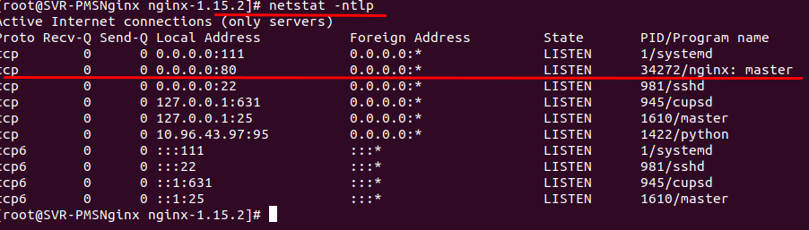
Weblogic
准备工作
- 将weblogic安装文件放在/home/weblogic下 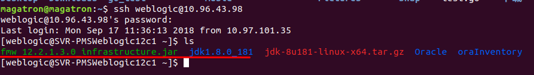
配置JAVA JDK
- 将java jdk 文件夹服务制到/usr/local/share目录下
xxxxxxxxxxcp -r jdk1.8.0._181 /usr/local/share- 配置Java环境变量
xxxxxxxxxxvim /etc/profile- 将以下内容追加到文件中
xxxxxxxxxxexport JAVA_HOME=/usr/local/share/jdk1.8.0_181export JRE_HOME=$JAVA_HOME/jreexport PATH=$JAVA_HOME/bin:$PATH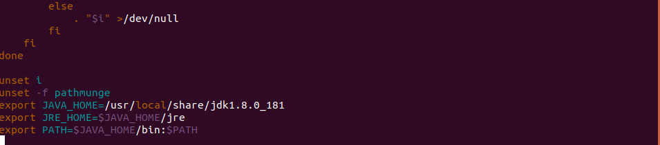
- 重启服务器使环境变量生效
xxxxxxxxxxsudo init 6安装weblogic
- 启动安装程序
xxxxxxxxxxjava -jar fmw_12.2.1.3.0_infrastructure.jar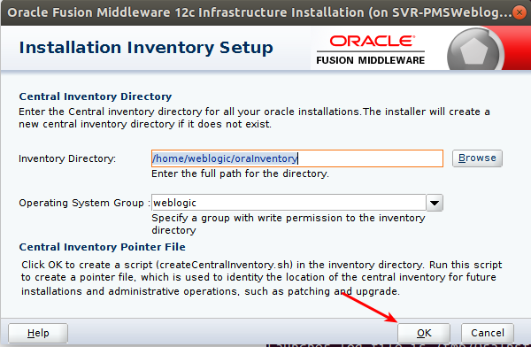
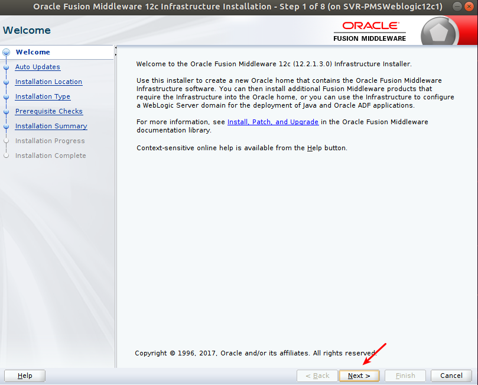
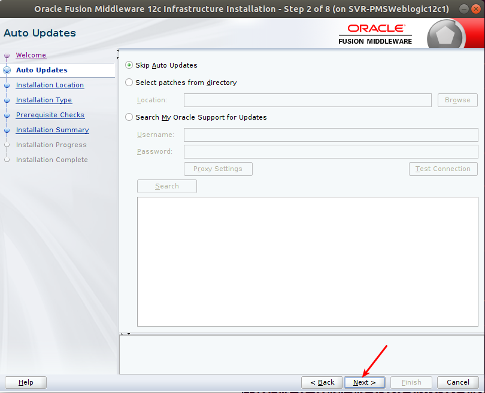
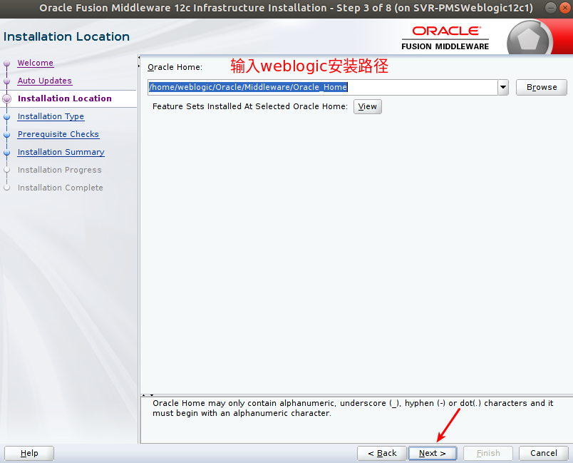
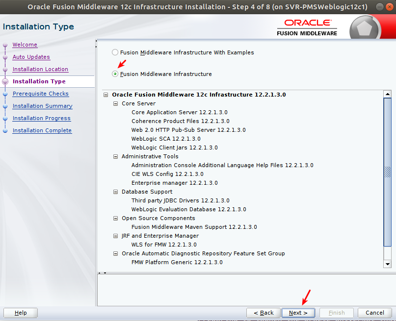
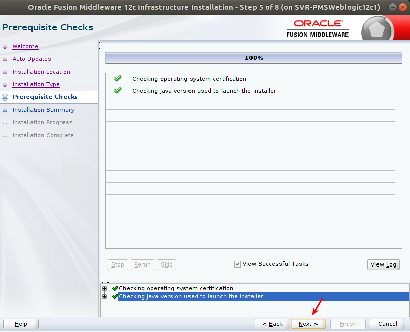
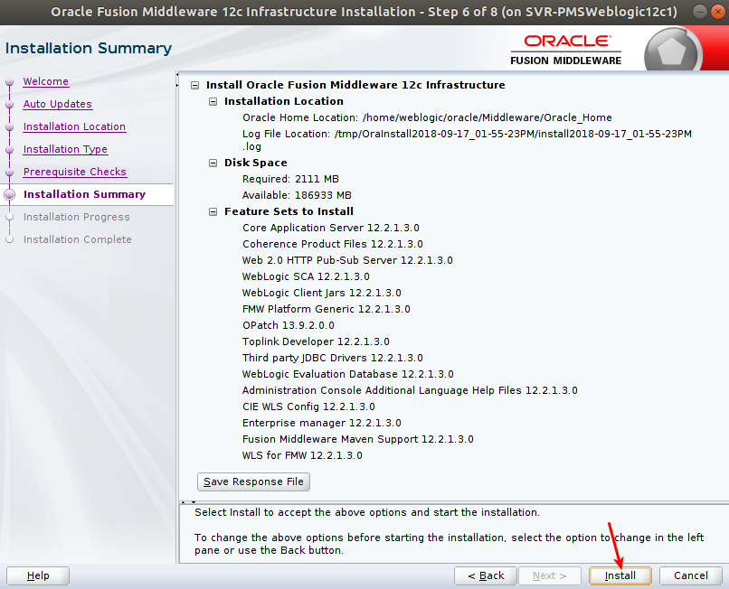
创建Weblogic域
- 进入目录
xxxxxxxxxxcd /home/weblogic/Oracle/Middleware/Oracle_Home/wlserver/common/bin此目录/home/weblogic/Oracle/Middleware/Oracle_Home/为安装weblogic时所输入的目录- 运行脚本
xxxxxxxxxx./config.sh
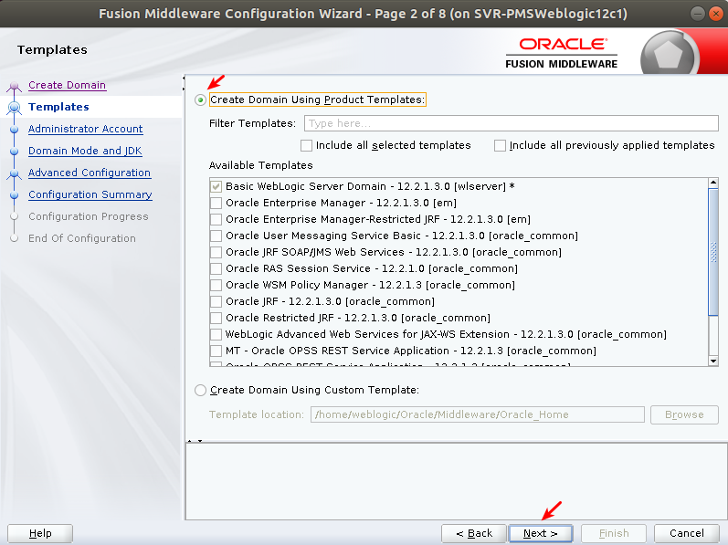
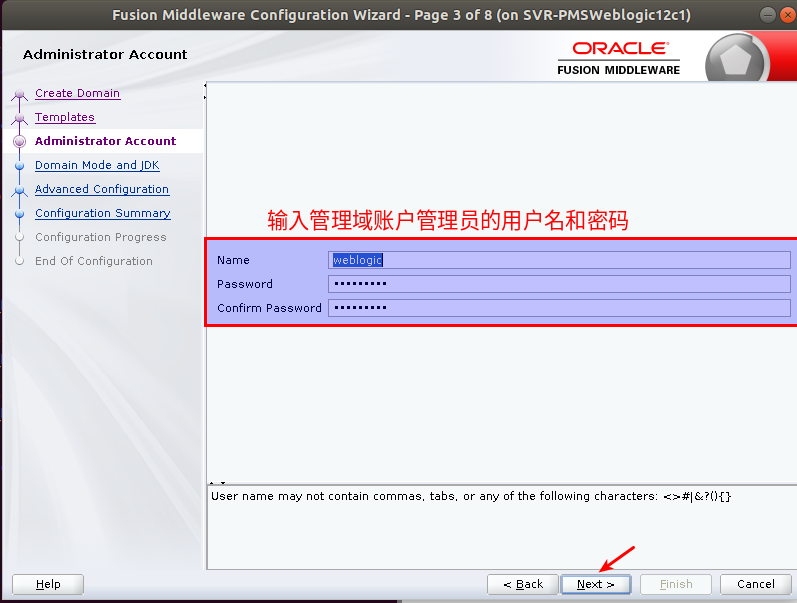
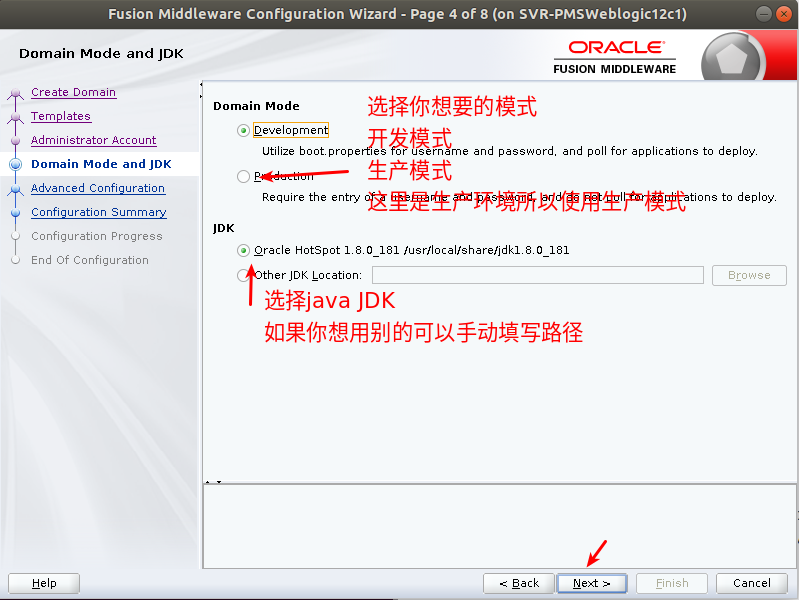
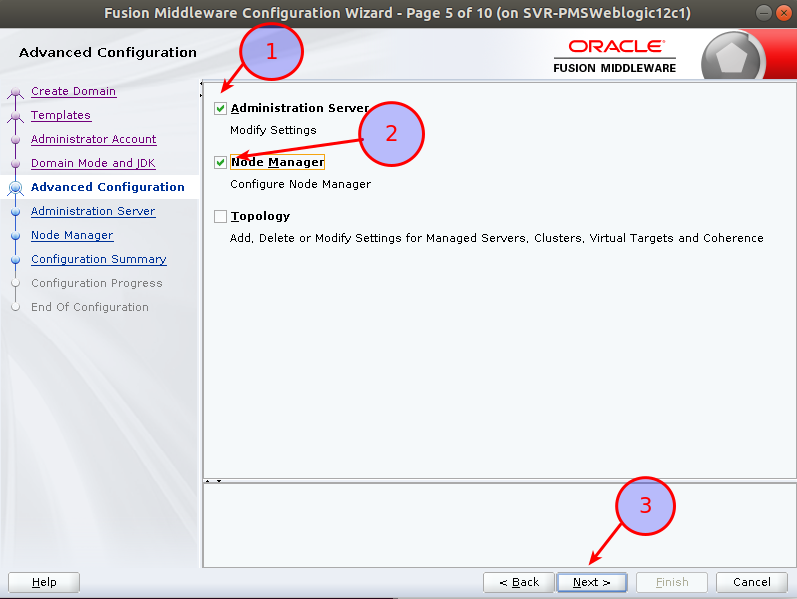
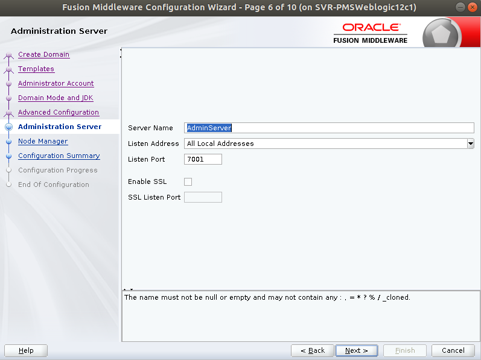
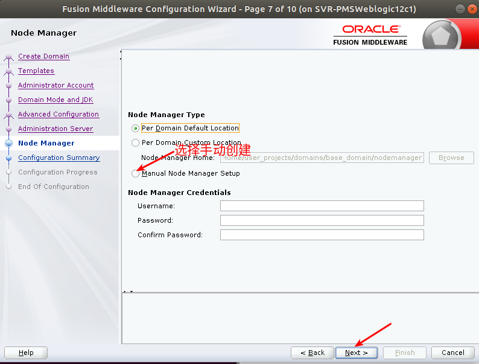
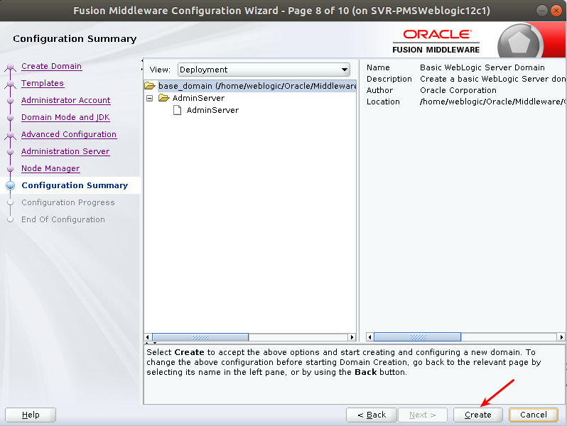
初始化weblogic管理节点
- 进入weblogic domain目录
xxxxxxxxxxcd /home/weblogic/Oracle/Middleware/Oracle_Home/user_projects/domains/PMS_domain/bin- 启动weblogic administrator server
xxxxxxxxxx./startWeblogic.sh- 输入用户名密码(在创建域的时候所设定的管理员用户名和密码)
- 按Ctrl+c 结束命令
设置不使用weblogic管理员密码启动管理端
- 进入管理服务器目录
xxxxxxxxxxcd /home/weblogic/Oracle/Middleware/Oracle_Home/user_projects/domains/PMS_domain/servers/AdminServer- 创建目录sercurity 进入security目录
xxxxxxxxxxmkdir securitycd security- 创建boot.properties
xxxxxxxxxxvim boot.properties- 在文件中写入
xxxxxxxxxx# password and username is the password and username which to create administrator serverusername=weblogicpassword=weblogic1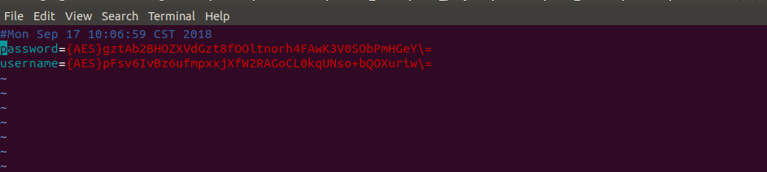
- 将./startWeblogic挂载到后台执行
xxxxxxxxxxnohup ./startWeblogic.sh > nohup.out 2>&1 &- 查看启动进程
xxxxxxxxxxtail -f nohup.out
创建weblgoic 集群
说明
如果使用的是单节点的weblogic服务器,到上一步就可结束,如果有多个weblogic节点想要构成cluster,请将安装weblogic步骤,所产生的文件全部复制到其他节点,并将java 的配置复制一份到相应的节点;
注册Nodemanager
准备工作
- 复制weblogic文件
xxxxxxxxxxscp -r /home/weblogic/Oracle weblogic@10.96.43.99:/home/weblogic/- 登录到相应的服务器
xxxxxxxxxxssh weblogic@10.96.43.99- 启动weblogic 管理节点
xxxxxxxxxxnohup ./startWeblogic.sh > nohup.out 2>&1 &- 修改weblogic nodemanager properties
- 在/home/weblogic/Oracle/Middleware/Oracle_Home/user_projects/domains/PMS_domain/nodemanager目录下有一个nodemanager.properties文件
- 编辑nodemanager.properties文件
xxxxxxxxxxvim nodemanager.properties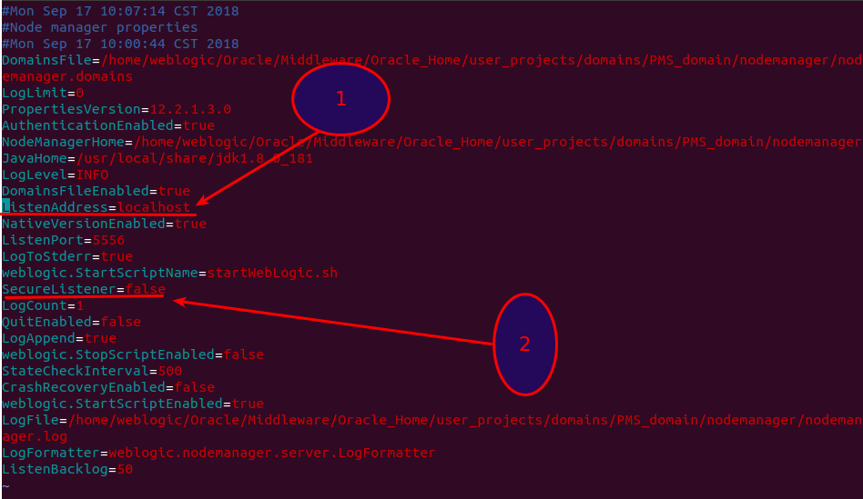
注释
- 如果nodemanager跟管理节点在同一个节点上,这里填写localhost 如果nodemanager 跟管理节点不在同一个节点上,这里填写nodemanager所在节点的IP地址
- 此处将true改为false
向管理节点注册Nodemanager
- 运行wlst命令模式
xxxxxxxxxx./wlst.sh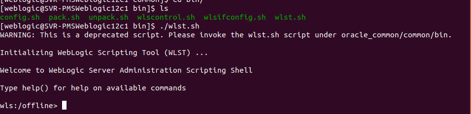
- 连接管理节点
xxxxxxxxxxwls:/offline> connect('weblogic','weblogic1','t3://10.96.43.98:7001')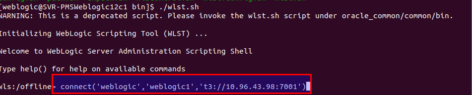 注释 括号内内容从左向右依次为管理节点的用户名,密码,IP:端口号
- 向域中注册Nodemanager
xxxxxxxxxxwls:/PMS_domain/serverConfig/> nmEnroll('/home/weblogic/Oracle/Middleware/Oracle_Home/user_projects/domains/PMS_domain','/home/weblogic/Oracle/Middleware/Oracle_Home/user_projects/domains/PMS_domain/nodemanager')- 注册成功后退出
xxxxxxxxxxwls:/PMS_domain/serverConfig/> exit()